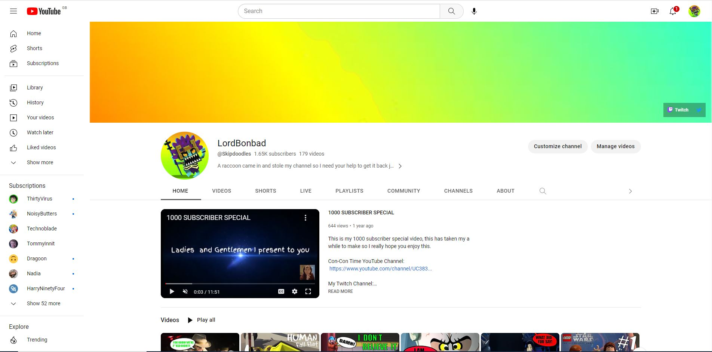

For Connor's College and University courses he had to produce a few short films to show off his amazing filming and editing and of course acting skills
Here are some of them shorts films for you to watch.
This is Connor's final major project that he did and was his last piece of work for hos Level 3 Creative Media course at North Warickshire and Hinickey College.
We Are Soldiers is a adaptation of the CW Tv show Arrow starring Stephen Amell, where Arrow 'aka' Oliver Queen shows his past on an island when he was stranded their differently to how we know it on the show. You get to truly see the hardship he endored, psychologically and see how he over comes it all and survives.
This is a short documentary that Connor made in his ealry days at college for one of his assignments and that was tp produce a documentary of his choosing, and he pick to do it about False Awakenings. What are they, what other peoples experiences were like and his very own false awakenings encounter.
For one of his first projects at De Monfort University Connor had to make a advert about anything he wanted and he choose his one great love, PIZZA! The advert at the begin seems like your normal advertisement for pizza but then take a big turn into a comedy skit to hopefully get people to eat pizza more. That was Connor's idea anyway.
This very short, short film was an ice-breaker project when Connor was just starting university and it's how he met a lot of great people when shooting this video. It is about a student who is late for his class but what peop;e don't know is that he has the superpower of super-speed, but that power comes at a high cost.
At university Connor and his whole class had to planout fully and present a live radio show in just 3 weeks which none of them had ever done before. Connor in all of this was the Floor Manager, so his was incharge of making sure that everyone on set such as the camera crew, guests and presenters were ok and knew what they were doing.
While Connor was at university he had to get to togther with a group of people and make 2, 1 hour long radio shows which they had to plan and prsent themselves.
Here are the highlights of each of the radio shows.
These are just some of the many stunning photographs that Connor has taken in his lifetime but these photos you are about to see are one that he took for his university course and got the highest grade for.
This is how Connor is going to takeover, his very own YouTube Channel. Which he post gaming guide to help other players to gain their trust. So for he has gained over 1500 subscribers and 300,000 total views, and with all of this he can now make money from making videos.
